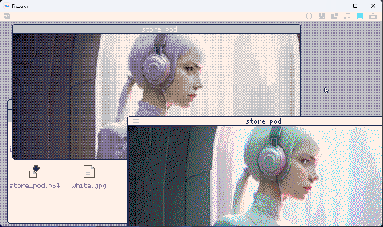
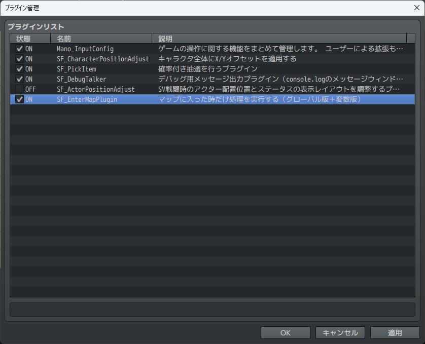
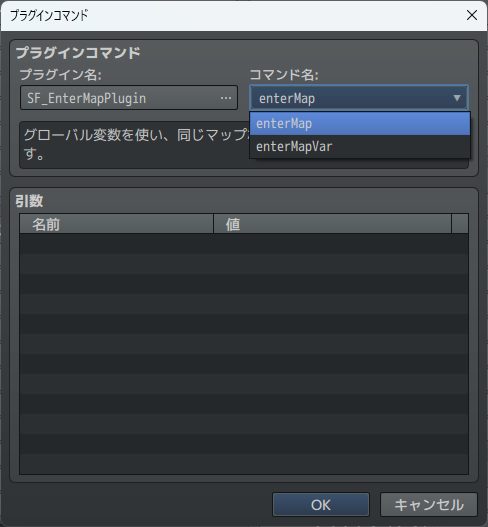
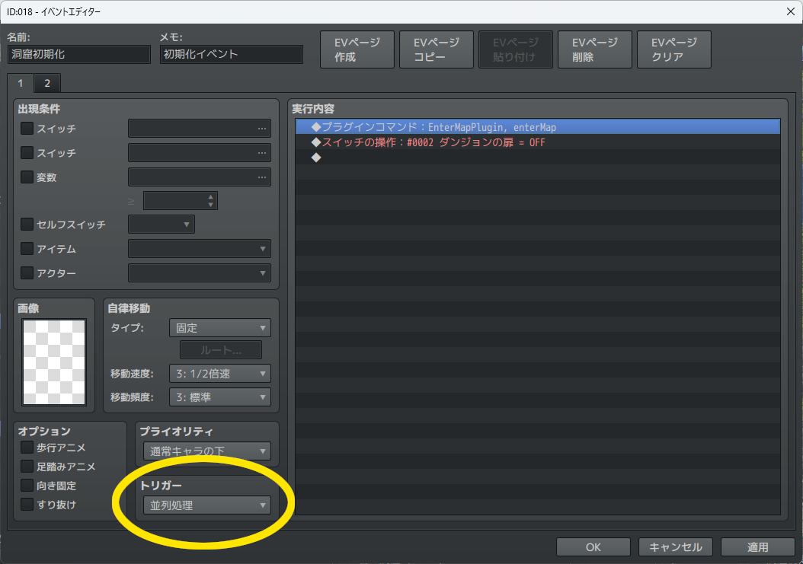

sugar flower
Hello! I'm still in the process of preparing, but this site will mainly be about picotron, pico-8, music, illustrations, and other creative things.
Happy Halloween! 2024.10
image2userdata
- image2userdata-win64.zip_250303 - Color conversion software optimized for Picotron palette
It is currently under development and we are making tweaks to improve conversion.
At this time, we only distribute binaries for Windows 64bit.

How to use
- Resize the image to the appropriate size using Gimp or similar.
- Run image2userdata to create the converted data on the clipboard.
- Run it like this: "image2userdata imagefile.png" or "image2userdata imagefile.png b". Adding "b" will convert using Beyer-Marix (usually Floyd Steinberg).
- Run store_pod.p64 on your picotron and it will create a file called "output.pod" on your desktop and show the actual image in a window.
Note: output.pod will be overwritten.
*There is currently an issue with converting Bayer matrices which results in slightly strange colors. We are working on it.
*If store_pod.p64 doesn't work, you can try the following:
cb = get_clipboard()
store("/desktop/output.pod", pod(cb, 7))
ss_tool_cli
This is a tool that lets you take a series of videos to create a time-lapse video of your PC screen.
Basic syntax
ss_tool_cli path interval
- path — Directory where screenshots will be saved
- interval — Capture interval in seconds
binary download
repository
RPG Maker MZ
SF_EnterMapPlugin
download: SF_EnterMapPlugin.zip
このプラグインは十分にテスト出来ていない為意図しない動作をしたりパフォーマンスに問題が発生するかもしれません。
その際はblueskyのsugarflowerまで連絡をいただければ幸いです。
Please note that this plugin hasn't been thoroughly tested, so it might cause unexpected behavior or performance issues. If you run into any issues, I'd really appreciate it if you could reach out to sugarflower on Bluesky!
@euphoria6611.bsky.social
マップのコモンイベントの先頭に配置することでマップ移動時の初期化を実現するためのプラグインです。
このプラグインは呼ばれた際に現在のマップが以前に保存されたマップIDかどうか調べ、マップが変更されているのを検知した場合は何もしませんが、同一のマップであることを知るとそれ以降のイベントをすべてキャンセルします。
This plugin handles map initialization during transitions when placed at the beginning of a map's common event. When called, it checks if the current map matches the previously saved map ID. If the map has changed, it does nothing; if it is the same map, it cancels all subsequent event processing.

プラグイン管理にSF_EnterMapPluginを読み込みます。
Load SF_EnterMapPlugin into the plugin manager.

SF_EnterMapPluginにはグローバル変数を利用するenterMapと、指定の変数を利用するenterMapVarがあります。通常はenterMapを利用します。
SF_EnterMapPlugin includes enterMap, which uses a global variable, and enterMapVar, which uses a designated variable. Typically, enterMap is recommended.

マップのコモンイベントの先頭にプラグインコマンドで実行させます。このプラグイン以降の処理はマップに入場、または再入場時に一度だけ実行されます。また、プラグインは並列処理で実行させる必要があります。
Place this as a plugin command at the very beginning of the map's common event. The events following this plugin will execute only once when entering or re-entering the map. Note that the plugin must be configured to run in parallel processing.